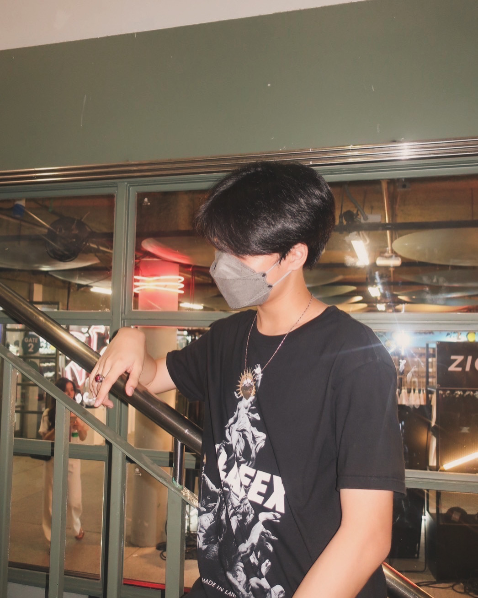

Taro
Student
Pongkaseam Sumritpunsuk
VIEW PROFILE

Who
--
--
VIEW GALLERY
I am a student at Sarasas Witaed Bangbuathong School, currently in grade 12. I have a strong passion for programming and design, and web development.
I have a strong passion for programming and design, and web development.
- Focus on Html Css Js lua Python C++ Java
My Goal is to become a Student of 42 Bangkok and learn more about programming and design, and web development.
My hobbies are programming on FiveM servers.

Made with ❤️